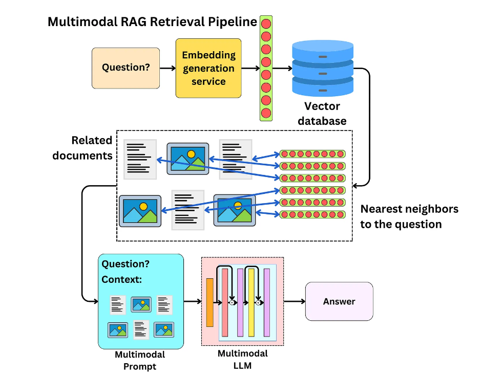
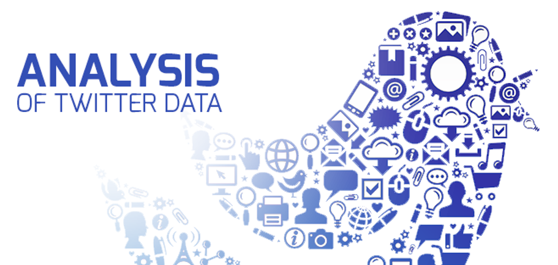

My Projects

Customer Churn Prediction
The project predicts telecom customer churn using supervised machine learning. By analyzing usage patterns, demographics, and account data, it identifies at-risk customers to help companies retain them.

Multimodal QA Chatbot
This project is a multimodal chatbot that answers questions about documents, including complex PDFs and images. It uses Langchain for document processing, OpenAI for NLP, and Langfuse for observability and analytics..

NLP-Twitter Data Analysis and Award Extraction
The Twitter data analysis project for the Golden Globe Awards uses NLP and machine learning to analyze tweets, identify trends, and predict winners across categories..